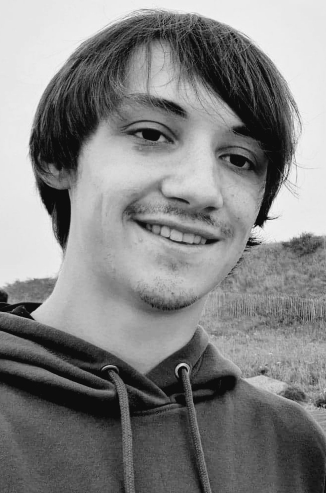

Etudiant en licence professionnelle conception, rédaction et réalisation web
Licence professionnelle Conception, Rédaction et Réalisation Web (CRRW)
2020 à 2022- BTS Systèmes numériques option électronique et communications au Lycée François Bazin
2019- Année préparatoire en art appliqué (Non Validé)
2018- Bac STI2D au Lycée Pierre Bayle option SIN
- Stage de 6 semaine dans le cadre de mon BTS : Elaboration d'un kit débutant pour carte Raspberry Pico